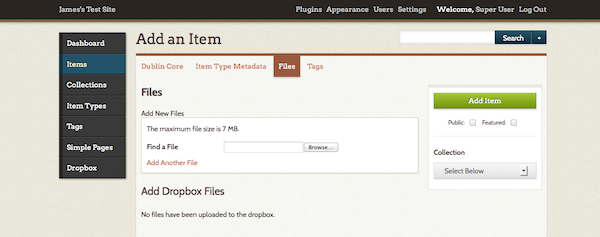

When adding items to your archive, often you will upload one or more files (images, documents, et al) associated with that item.

File Types
Omeka accepts most files and file types. If you are having difficulty or receiving MIME Type errors, please see more information about adjusting the MIME Types or Accepted File Extensions in the section on managing security settings.
File Display Order
Once files are added to an item, you may click and drag the files into the preferred display order for both public and admin item pages.
Files with Thumbnails
Thumbnail previews are created for all files types in Omeka 2.0. If you have access to the config.ini file, you can manage thumbnail configuration
File Size Limitations
Please check with your server administrator, because these settings are server specific and not imposed by the Omeka system.
These limitations vary from server to server and we cannot change this for you. If you have a problem uploading files, please first check with your hosting service or your local server administrator.
Batch Add Files
To upload more than one file at a time, you may download and install the Dropbox plugin. It allows you to upload multiple files directly into a folder on your server that you can then add in the items admin interface.
File Metadata
You may add full Dublin Core metadata for every file uploaded.
To add metadata, click the Edit button found to the right of the file name in admin/items/edit. You also may view or edit file metadata from the admin/items/show by clicking the file name under the heading "File Metadata."

Media Files
To keep up with the changing browser support landscape, as of version 2.4 Omeka uses HTML 5 audio and video tags when embedding audio and video, instead of the object and embed tags used by previous versions.
This change means generally better support on newer browsers, but worse support on older ones and for older video formats especially.
By choosing from a few well-supported formats for audio and video files, you can provide a much better experience for your users across different platforms and devices.
Video
MP4
The MP4 container (.mp4 or .m4v) is the best-supported video format across browsers and platforms. By far the best choice for video that will work well across different browsers is a .mp4 file, with H.264 video and AAC audio.
.mp4 files can contain other types of video (or audio), including newer ones like H.265, and older ones like MPEG-4 Visual. Any video codec other than H.264 has ‘’’much’’’ worse browser support.
Other Formats
The WebM (.webm) container with VP8 or VP9 video is supported by several browsers, but Internet Explorer and Safari are notable and significant exceptions.
The Ogg (.ogg, .ogv) container and Theora video are supported by some browsers, but there is little support among mobile browsers and no support at all on IE or Safari.
Audio
MP3
MP3 (.mp3) is one of the most common formats for compressed audio, and it enjoys wide support across browsers and from desktop to mobile.
AAC
AAC is a somewhat newer format than MP3, but it also is well supported in most browsers. The widest support is for AAC in an MP4 container (this usually carries the file extension .m4a), with somewhat lesser support for other containers and formats (often found with a .aac extension).
Other Formats
WAV or WAVE (.wav) audio is supported by most browsers (with the notable exception of Internet Explorer). The major downside for use on the Web is that WAV audio is uncompressed, so it takes up vastly more storage space and bandwidth than the compressed formats listed above. If feasible, it’s best to use one of those instead of WAV.
Ogg Vorbis audio (.ogg, .oga) is a compressed format like MP3 and AAC, but it has much less widespread support. Expect Vorbis audio to only work on Firefox, Chrome, and Android.
Opus (.opus) is one of the newer available audio formats. For the time being, it has a similar problem as Vorbis: a lack of support among browsers, but there are signs that Opus could gain more support in the future.
Legacy Formats
There are a lot of media files out there that aren’t in any of the formats listed here. With certain add ons or on certain platforms (like Safari on the Mac in many cases), it can be possible to embed some of those files with HTML 5, but expect many or most users to be unable to play them. Browser plugins can also play many file types, but browsers are steadily reducing and removing their support for these kinds of plugins.
For old media, often the best choice is to just present a download link so the viewer can play or convert the file locally. This is what Omeka does when it doesn’t recognize a file type or when a browser reports that it can’t play a file.
File formats which result in a download link, rather than an embedded playback, include: - Video: avi, wmv - Audio: diff (except Safari), midi, wha
If you do not see a format listed here that you think should be, try it out and let us know the results.